X2594–X2676¶
Bicentric Pairs PU(68)–PU(85) & Golden Arbelos Points
Sums, differences, crosssums, crossdifferences, trilinear poles, and midpoints of bicentric pairs PU(68) through PU(85) (X2594–X2670), together with the 1st and 2nd Golden Arbelos points (X2671–X2676).
X2594–X2676 (Bicentric Pairs PU(68)–PU(85) & Golden Arbelos Points) — 16 representative centers (from 83 in collection) constructed on acute reference triangle \((a, b, c) = (5, 6, 7)\) with unit baseline AB = \(1\).¶
Group Preamble — Centers Related to Bicentric Pairs
Most of the centers X2594 - X2670 are defined in terms of bicentric pairs of points (e.g., the 1st and 2nd Brocard points).
For a list of bicentric pairs and associated terminology and properties, press the Tables button at the top of this page.
X2594SUM OF PU(68)
The notation “PU(68)”, as described in the Bicentric Pairs section accessible by the Tables button, abbreviates a bicentric pair of points P =\(p : q : r\) and U =\(u : v : w\), where p, q, r have the form g(a,b,c), g(b,c,a), g(c,a,b) and u,v,w have the form h(a,b,c), h(b,c,a), h(c,a,b). “Sum of PU(68)” denotes the point
X2595CROSSSUM OF PU(68)
X2595 = X2603-Ceva conjugate of X2596
X2596CROSSDIFFERENCE OF PU(68)
X2596 = X2603-Ceva conjugate of X2595
X2597TRILINEAR POLE OF PU(68)
X2597 = cevapoint of X2601 and X2602
X2598MIDPOINT OF PU(68)
X2598 is the midpoint of pu(68).
X2599SUM OF PU(69)
X2599 = X1-Ceva conjugate of X2594
X2600DIFFERENCE OF PU(69)
X2600 = crosssum of X1 and X2600
X2601CROSSSUM OF PU(69)
X2601 = X2597-Ceva conjugate of X2602
X2602CROSSDIFFERENCE OF PU(69)
X2602 = X2597-Ceva conjugate of X2601
X2603TRILINEAR POLE OF PU(69)
X2603 = cevapoint of X2595 and X2596
X2604MIDPOINT OF PU(69)
X2604 is the midpoint of pu(69).
X2605DIFFERENCE OF PU(71)
X2605 = midpoint of X663 and X1459
X2606CROSSSUM OF PU(70)
X2606 = crosspoint of PU(71)
X2607CROSSDIFFERENCE OF PU(70)
X2607 = perspector of conic {{A, B, C,PU(71)}}
X2608TRILINEAR POLE OF PU(70)
X2608 = point of intersection, other than A, B, C, of 1st and 2nd bicentrics of the Kiepert hyperbola
X2609MIDPOINT OF PU(70)
X2609 is the midpoint of pu(70).
X2610SUM OF PU(71)
X2610 = crossdifference of every pair of points on line X1X60
X2611DIFFERENCE OF PU(71)
X2611 = reflection of X1109 in X11
X2612CROSSSUM OF PU(71)
X2612 = crosspoint of PU(70)
X2613CROSSDIFFERENCE OF PU(70)
X2613 = reflection of X2612 in X1101
X2614TRILINEAR POLE OF PU(71)
X2614 = cevapoint of X2606 and X2607
X2615MIDPOINT OF PU(71)
X2615 is the midpoint of pu(71).
X2616POINT TANIA
X2616 = X1109-cross conjugate of X1
X2617ISOGONAL CONJUGATE OF X2616
X2617 is the isogonal conjugate of X2616.
X2618DIFFERENCE OF PU(72)
X2618 = X1-Ceva conjugate of X2616
X2619CROSSSUM OF PU(72)
X2619 = crosspoint of PU(73)
X2620CROSSDIFFERENCE OF PU(72)
X2620 = perspector of conic {{A, B, C,PU(73)}}
X2621TRILINEAR POLE OF PU(72)
X2621 = isogonal conjugate of X2620
X2622MIDPOINT OF PU(72)
X2622 is the midpoint of pu(72).
X2623BARYCENTRIC PRODUCT OF PU(73)
X2623 = crossdifference of every pair of points on line X5X51
X2624SUM OF PU(73)
X2624 = crosssum of X1 and X2624
X2625CROSSSUM OF PU(73)
X2625 = X2621-Ceva conjugate of X2626
X2626CROSSDIFFERENCE OF PU(73)
X2626 = X2621-Ceva conjugate of X2625
X2627TRILINEAR POLE OF PU(73)
X2627 = isogonal conjugate of X2626
X2628MIDPOINT OF PU(73)
X2628 is the midpoint of pu(73).
X2629CROSSSUM PU(74)
X2629 = X656-Ceva conjugate of X1

X2630MIDPOINT OF PU(74)
X2630 is the midpoint of pu(74).
X2631SUM OF PU(75)
X2631 = crosssum of X1 and X2631
X2632DIFFERENCE OF PU(75)
X2632 = X1-Ceva conjugate of X652
X2633CROSSSUM OF PU(75)
X2633 = X1-Ceva conjugate of X162
X2634MIDPOINT OF PU(75)
X2634 is the midpoint of pu(75).
X2635SUM OF PU(76)
X2635 = bicentric sum of PU(76)
X2636CROSSSUM OF PU(76)
X2636 = X652-Ceva conjugate of X1
X2637SUM OF PU(77)
X2637 = crosssum of X1 and X2637
X2638DIFFERENCE OF PU(77)
X2638 = X1-Ceva conjugate of X652
X2639CROSSSUM OF PU(77)
X2639 = crosspoint of PU(76)
X2640CROSSSUM OF PU(78)
X2640 = crosspoint of PU(79)
X2641MIDPOINT OF PU(78)
X2641 is the midpoint of pu(78).
X2642SUM OF PU(79)
X2642 = isogonal conjugate of X36085
X2643DIFFERENCE OF PU(79)
X2643 = trilinear pole wrt incentral triangle of line X1X21
X2644CROSSSUM OF PU(79)
X2644 = crosspoint of PU(78)
X2645MIDPOINT OF PU(79)
X2645 is the midpoint of pu(79).
X2646SUM OF PU(80)
X2646 = midpoint of X1 and X35
X2647CROSSSUM OF PU(80)
X2647 = crosspoint of PU(81)
X2648TRILINEAR POLE OF PU(80)
X2648 = isogonal conjugate of X1758
X2649MIDPOINT OF PU(80)
X2649 is the midpoint of pu(80).
X2650SUM OF PU(81)
X2650 = reflection of X2292 in X1
X2651CROSSDIFFERENCE OF PU(81)
X2651 = perspector of conic {{A, B, C,PU(80)}}
X2652TRILINEAR POLE OF PU(81)
X2652 = isogonal conjugate of X2651
X2653MIDPOINT OF PU(81)
X2653 is the midpoint of pu(81).
X2654SUM OF PU(82)
X2654 = X1-Ceva conjugate of X2658
X2655CROSSDIFFERENCE OF PU(82)
X2655 = X296-Ceva conjugate of X1
X2656TRILINEAR POLE OF PU(82)
X2656 = X243-cross conjugate of X1
X2657MIDPOINT OF PU(82)
X2657 is the midpoint of pu(82).
X2658SUM OF PU(83)
X2658 = X1-Ceva conjugate of X2654
X2659CROSSDIFFERENCE OF PU(83)
X2659 = perspector of conic {{A, B, C,PU(82)}}
X2660TRILINEAR POLE OF PU(83)
X2660 = isogonal conjugate of X2659
X2661MIDPOINT OF PU(83)
X2661 is the midpoint of pu(83).
X2662CROSSSUM OF PU(82)
X2662 = crosspoint of PU(83)
X2663CROSSSUM OF PU(84)
X2663 = crosspoint of PU(85)
X2664CROSSDIFFERENCE OF PU(84)
X2664 = perspector of conic {{A, B, C,PU(85)}}
X2665TRILINEAR POLE OF PU(84)
X2665 = isogonal conjugate of X2664
X2666MIDPOINT OF PU(84)
X2666 is the midpoint of pu(84).
X2667SUM OF PU(85)
X2667 = trilinear pole, wrt incentral triangle, of Lemoine axis
X2669CROSSDIFFERENCE OF PU(85)
X2669 = perspector of conic {A, B, C,PU(84)}
X2670MIDPOINT OF PU(85)
X2670 is the midpoint of pu(85).
X26711st GOLDEN ARBELOS POINT
Suppose UV is a segment and 1/2 < s < 1. Let P be the point on UV satisfying |UP|/|VP| = s. Let O be a semicircle having diameter UV. Let H be the semicircle having diameter VP, on the same side of UV as O. Let K be the semicircle having diameter UP, on the same side of UP as O. The three circular arcs form an arbelos, R.
X26722nd GOLDEN ARBELOS POINT
In the construction of X2671, if A' is the center of the s-Archimedean circle of the inward arbelos on segment BC, and B' and C' are defined cyclically, then A'A, B'B, C'C concur in X2672.
X2673ISOGONAL CONJUGATE OF X2671
X2673 is the isogonal conjugate of X2671.
X2674ISOGONAL CONJUGATE OF X2672
X2674 is the isogonal conjugate of X2672.
X2675∩X2672X_2674
This point of intersection and the fact that it lies on the Euler line were contributed by Peter J. C. Moses, August, 31, 2004.
X2676(EULER LINE)∩X2671X_2672
As a point on the Euler line, X2676 has Shinagawa coefficients \((h - 1, -h - 1)\).